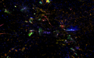
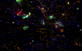
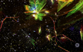
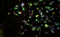
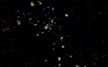

Fluid Space
Artificial Nature: Fluid Space opened on May 01 2009 at SOMA (Seoul Olympic Museum of Art) as part of the A.L.I.C.E. MUSEUM 2009, Seoul, Korea. The A.L.I.C.E. Museum 2009 is organized by Art Center Nabi. It consists of creative perception, learning, and action for Artistic, Lively, Intelligent, Creative, and Eco-friendly Kids. Artificial Nature is exhibited under the category 'Creative action – ecology & cosmic vision.' The exhibition runs from May 01 to June 21, 2009.
Screenshots:
|  |  |  |
 |
 |
 |  |
Screen capture:
Loading Flash Player.
Artificial Nature: Fluid Space upgrades several components of Artificial Nature as an Infinite Game:
- The fluid dynamics of the environment are much improved (deriving from: J. Stam. Real-time fluid dynamics for games. Proceedings of the Game Developer
Conference, Jan 2003.) All objects are affected by (and affect) fluid flow to varying degrees, including the navigating user herself. - A camera and microphone in the exhibition space detect user movements and sounds, and add turbulence to the fluid simulation accordingly.
- The space of the environment is infiinte (toroidal); there are no boundaries to limit exploration.
- Organism development is visualized continuously, growing from smaller spherical objects into larger, spikier objects.
- Secondary biotic organisms have branching rather than linear structures.
- Particles follow a law of conservation through a circular life-cycle in the ecosystem. It is possible to observe the particles throughout this cycle:
- Mobile organisms eat orange particles, they are gradually metabolized within the organism and expelled when fully metabolized or upon organism death.
- Expelled particles are purple, but gradually accrue energy from the environment and become blue. Purple/blue particles move quickly in the fluid but do not clump.
- Branchlike organisms absorb nearby blue particles and extract energy. The particles diffuse through the branches to their tips, and are ejected as yellow particles.
- Yellow particles gradually accrue energy from the environment and become orange. Yellow/orange particles move slowly in the fluid and tend to clump together.
- Three events are sonified and spatialized in the exhibition space:
- Organisms eat particles (short duration granular sound)
- Organisms reproduce (fixed pitch metallic/flute-like sound)
- Organisms encounter each other (variable pitch softer sound)